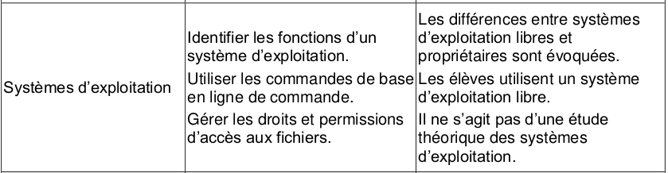
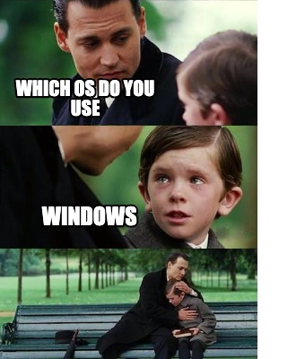
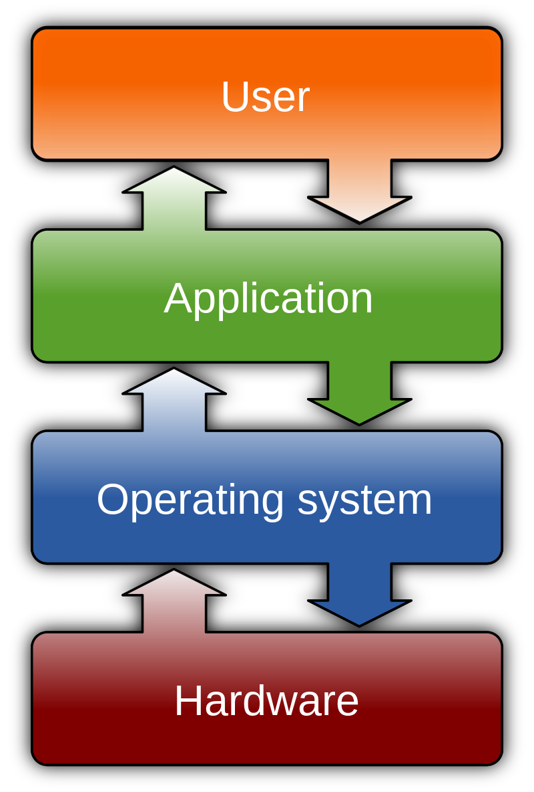
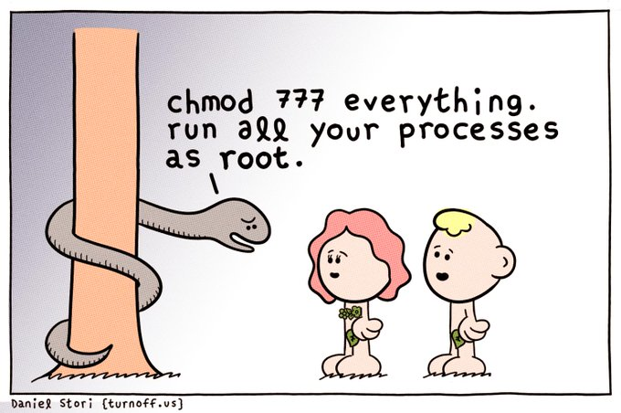
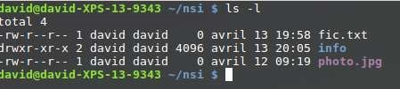
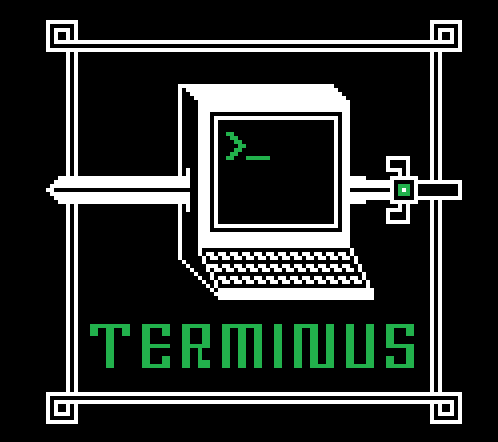

4.4 Découverte des Systèmes d'exploitation (SE ou OS pour Opérating Systems)⚓︎


1. Introduction⚓︎
Sur un ordinateur, un utilisateur interagit avec des programmes (jeux, traitement de texte, navigateur Web ...). Ces programmes qui fonctionnent en même temps, ont besoins d'utiliser les ressources de la machine pour effectuer leur tâches : lire ou sauvegarder des fichiers à différents endroits (disque dur, clé USB,...), afficher des images à l'écran, récupérer des caractères saisis au clavier, récupérer la positions de la souris, gérer un clic,...

Un système d'exploitation est un ensemble de programmes qui est chargé au démarrage de l’ordinateur et qui ensuite tourne en permanence. C'est lui qui permet de gérer les ressources matérielles et logicielles d'un ordinateur. Les OS les plus répandus sont Windows, Mac OS, GNU/Linux (qui comporte différentes distributions comme Ubuntu, Debian, Fedora pour les ordinateurs mais aussi Android ou iOsS pour les mobiles).

Les OS sont des systèmes libres ou propriétaires. Outre la gratuité ou non, les différences sont notables. Un système libre comme GNU/Linux favorise la possibilité de gérer la machine comme on l'entend. La plupart des appareils vendus sur le marché sont équipés d'un système d'exploitation propriétaire (qui nous est vendu avec !)
Les rôles principaux du système d’exploitation sont les suivants :
 Fournir une «interface» entre l'ordinateur et l'utilisateur pour permettre à ce dernier de donner des ordres à la machine (par exemple : lire ou écrire des informations dans la mémoire, lancer une impression...) ou pour lui signaler les erreurs d'exécution ; cette interface prend soit la forme d'un langage de commande (comme «MS-DOS», Shell) soit la forme d'objets graphiques à manipuler (fenêtres, menus...) ;
Fournir une «interface» entre l'ordinateur et l'utilisateur pour permettre à ce dernier de donner des ordres à la machine (par exemple : lire ou écrire des informations dans la mémoire, lancer une impression...) ou pour lui signaler les erreurs d'exécution ; cette interface prend soit la forme d'un langage de commande (comme «MS-DOS», Shell) soit la forme d'objets graphiques à manipuler (fenêtres, menus...) ;
Gérer les «ressources» de l'ordinateur, à savoir ses mémoires, son microprocesseur et ses périphériques : les systèmes d'exploitation actuels, en effet, sont «multitâches» ; cela signifie qu'ils permettent à plusieurs programmes de s'exécuter en même temps, et se chargent de répartir l'occupation des ressources utilisées par chacun d'eux (par exemple si deux programmes P1 et P2 sont lancés en même temps, le système d'exploitation permettra à un petit bout de P1 de s'exécuter, puis laissera la place à un petit bout de P2, puis de nouveau à un petit bout de P1, etc., de sorte que l'utilisateur aura l'impression que P1 et P2 sont exécutés en parallèle, alors que le processeur est toujours unique et séquentiel).
Être indépendant du matériel : masquer les particularités de la machine en substituant aux ressources physiques des abstractions (par exemple, la notion de fichier, est une notion abstraite, indépendante de la nature du support sur lequel les données de ce fichier sont réellement stockées).
Contrôler les usagers en leur donnant des droits différents selon leur statut (associés par exemple à différents mots de passe).
Ressources
Cookie Connecté : L'OS expliqué en 3 minutes
Histoire des systèmes d'exploitation (vidéo)
Histoire d'UNIX (vidéo)
2. Le travail en ligne de commandes⚓︎
À la "préhistoire" des systèmes d'exploitation, ces derniers étaient dépourvus d'interface graphique, toutes les interactions "système d'exploitation - utilisateur" se faisaient par l'intermédiaire de "lignes de commandes": suites de caractères, souvent ésotériques, saisies par l'utilisateur.
Dennis RITCHIE regarde Ken THOMPSON taper sur un terminal Teletype 33 relié au PDP-11/20 juste en face. Nous sommes en 1972 et ils viennent de mettre au point le système d'exploitation UNIX
Il peut paraître surprenant de présenter des commandes en mode texte alors que la plupart des systèmes d'exploitation modernes disposent d'une interface graphique conviviale et accessible à tous. Pourtant, maîtriser ces commandes permet de disposer d'outils puissants de configuration et de gestion de sa machine. La possibilité d'utiliser ces commandes dans des scripts systèmes (ce sont des programmes) va permettre d'automatiser de manière élégante et efficace un certain nombre de tâches. De plus, la prise de contrôle à distance d'une machine par l'intermédiaire des lignes de commandes se retrouve sur de nombreux systèmes embarqués, les routeurs de l'internet, etc...
C'est donc un outil indispensable à maîtriser pour tout administrateur système qui se respecte 
Maîtriser ces instructions demande un temps réellement conséquent, de l’ordre d’une année de travail à temps plein sous shell. Par contre, une fois les commandes maîtrisées, le gain de temps et de possibilité de réalisation est important.
Pour saisir des lignes de commandes, nous allons utiliser une console ou terminal : c'est l'invite de commande de Windows (cmd) ou le shell de Linux
2.1 Linux⚓︎
Linux est un OS open-source et libre, il est souvent cité comme étant un système d'exploitation alternatif à Windows. Mais en fait Linux est avant tout un noyau de système, c’est pour ça qu’on parle d’ailleurs de “Linux kernel”. Le noyau d'un système est l'ensemble des programmes (développés essentiellement en langage C pour Linux) qui permettent de démarrer la machine, d'assurer la liaison avec le matériel (souris, carte graphique , carte réseau,...) et de permettre l'exécution des logiciels.
Ce sont les distributions Linux qui proposent un système d'exploitation bâti autour de ce noyau Linux. On parle de distribution GNU/Linux quand il s’agit d’une solution prête à être installée par l’utilisateur final sur sa machine. Ces distributions GNU/Linux comprennent le noyau Linux ainsi qu'une interface graphique, et des logiciels libres sous licence GNU. Exemples de distributions GNU/Linux : Debian, Ubuntu, Fedora, Mint.
 Android est un système fondé sur Linux mais pas sur GNU.
Android est un système fondé sur Linux mais pas sur GNU.
Grace à sa puissance, sa légèreté et son coté open-source qui minimise les bugs, Linux est très présent dans le monde des serveurs. Il équipe la plupart des systèmes embarqués (box, robots, aérospatial, drones…) mais aussi les supercalculateurs. Linux domine le marché des smartphones via l’OS Android qui s’appuie sur un noyau Linux.
Ressources
L'histoire de Linux (video)
La folle histoire de Linux (article)
GNU et les logiciels libres (site à explorer)
2.2 Les commandes de base de Linux⚓︎
Commandes d'aide⚓︎
| Commande | Description - Syntaxe - Exemple |
|---|---|
| man | Retourne le mode d'emploi de la commande s'il existe : man nom_commande |
| help | Affiche l'aide de la commande |
Commandes "arborescences des dossiers et fichiers"⚓︎
| Commande | Description - Syntaxe - Exemple |
|---|---|
| cd | Change le répertoire de travail du shell |
| cd .. | Change de répertoire de travail pour accéder au répertoire père |
| cd ~ | Change le répertoire de travail pour revenir au répertoire personnel |
| cp | Copie le fichier et les répertoires : cp source destination |
| cp -R | Copie un répertoire et son contenu : cp -R répertoire_source répertoire_destination |
| ls | Liste le contenu du répertoire courant |
| ls -l | Liste le contenu du répertoire courant de manière détaillée |
| ls -R | Liste l'arbre du répertoire |
| mkdir | Crée un répertoire : mkdir nom_répertoire |
| rmdir | Efface un répertoire s'il est vide |
| rm | Supprime un fichier ou un répertoire : rm nom_fichier |
| rm -r | Supprime un répertoire et son contenu |
| rmdir | Supprimer un répertoire vide : rmdir nom_répertoire |
| mv | Déplace ou renomme un fichier : mv source destination |
| pwd | Affiche le répertoire courant |
Commandes "gestion des droits"⚓︎
| Commande | Description - Syntaxe - Exemple |
|---|---|
| chmod | Modifie les permissions d'accès à un fichier ou à un répertoire. |
| chown | Change le propriétaire et le groupe propriétaire d'un fichier. |
| chgrp | Change le groupe propriétaire d'un fichier : chgrp nom_du_groupe nom_du_fichier |
Commandes "Fichiers"⚓︎
| Commande | Description - Syntaxe - Exemple |
|---|---|
| cat | Affiche le contenu d'un fichier, peut aussi concaténer des fichiers |
cat fichier1 (affiche le contenu de fichier1) |
|
cat fichier1 fichier2 (affiche la concaténation de fichier1 et fichier2) |
|
cat fichier1 fichier2 > fichier3 (concaténation de fichier1 et fichier2 dans fichier3) |
|
| touch | Change le timestamp d'un fichier. Si le fichier n'existe pas, la commande créée un fichier vide. |
touch nom_fichier |
|
touch test.txt (crée le fichier s'il n'existe pas) |
|
touch test.txt (modifie le timestamp du fichier) |
|
| echo | Affiche une ligne de texte : echo ligne_texte |
| echo >> | Envoie une ligne de texte vers une sortie : echo "ligne_texte" >> nom_fichier |
Commandes "Utilisateurs et groupes"⚓︎
| Commande | Description - Syntaxe - Exemple |
|---|---|
| adduser | Ajoute un utilisateur. Il faut être connecté en tant que root : adduser nom_utilisateur |
| adduser user groupe | Ajoute un utilisateur dans un groupe. Il faut être connecté en tant que root : adduser user groupe |
| addgroup | Crée un groupe. Il faut être connecté en tant que root. |
| id | La commande id affiche les informations utilisateur et de groupe pour un utilisateur spécifié, ou si aucun utilisateur n'est spécifié, elle affiche les informations sur l'utilisateur courant : id user |
| passwd | Modifier le mot de passe : passwd login |
Commandes utiles⚓︎
| Commande | Description - Syntaxe - Exemple |
|---|---|
| shutdown -h now | Éteindre l'ordinateur. Il faut être connecté en tant que root. |
| exit | Fermer la session |
| su |
se connecter au compte |
| sudo | "super utilisateur do" : permet d'effectuer des commandes non autorisées |
3. Gestion des utilisateurs et des groupes⚓︎

Les systèmes de type "UNIX" sont des systèmes multi-utilisateurs. Plusieurs utilisateurs peuvent donc partager un même ordinateur. Chaque utilisateur possédant un environnement de travail qui lui est propre. Chaque utilisateur possède certains droits lui permettant d'effectuer certaines opérations et pas d'autres.
 Le système d'exploitation permet de gérer ces droits très finement.
Le système d'exploitation permet de gérer ces droits très finement.
Un utilisateur un peu particulier est autorisé à modifier tous les droits : ce "super utilisateur" est appelé "administrateur" ou "root".

L'administrateur pourra donc attribuer ou retirer des droits aux autres utilisateurs.
Au lieu de gérer les utilisateurs un par un, il est possible de créer des groupes d'utilisateurs. L'administrateur attribue des droits à un groupe au lieu d'attribuer des droits particuliers à chaque utilisateur.
Comme nous venons de le voir, chaque utilisateur possède des droits qui lui ont été octroyés par le "super utilisateur".
 Nous nous intéresserons ici uniquement aux droits liés aux fichiers, mais vous devez savoir qu'il existe d'autres droits liés aux autres éléments du système d'exploitation ((imprimante, installation de logiciels...).
Nous nous intéresserons ici uniquement aux droits liés aux fichiers, mais vous devez savoir qu'il existe d'autres droits liés aux autres éléments du système d'exploitation ((imprimante, installation de logiciels...).
Les fichiers et les répertoires possèdent 3 types de droits :
- les droits en lecture : r signifie "lecture autorisée".
- les droits en écriture : w signifie "écriture autorisée".
- les droits en exécution : x signifie "exécution autorisée" pour un fichier et "accès autorisé" pour un répertoire.
- le caractère - à la place d'un des trois précédents interdit le droit en question.
Il existe 3 types d'utilisateurs pour un fichier ou un répertoire :
- le propriétaire du fichier (par défaut, la personne qui a créé le fichier), il est symbolisé par la lettre u
- un fichier est associé à un groupe, tous les utilisateurs appartenant à ce groupe possèdent des droits particuliers sur ce fichier. Le groupe est symbolisé par la lettre g.
- tous les autres utilisateurs, ils sont symbolisés par la lettre o.
 La commande
La commande ls -l donne des informations sur les droits de ce qui se trouve dans le répertoire courant.
Exemple :

Lisons la première ligne de gauche à droite : -rw-r--r-- 1 david david 0 avril 13 19:58 fic.txt
- le premier symbole - signifie que l'on a affaire à un fichier (d pour un répertoire ou - pour un fichier
- les 3 symboles suivants rw- donnent les droits du propriétaire du fichier : ici, lecture, écriture, mais pas d'exécution.
- les 3 symboles suivants r-- donnent les droits du groupe lié au fichier : seule la lecture est autorisée
- les 3 symboles suivants r-- donnent les droits des autres utilisateurs : seule la lecture est autorisée
- le caractère suivant 1 donne le nombre de liens (nous n'étudierons pas cette notion ici)
- le premier david représente le nom du propriétaire du fichier
- le second david représente le nom du groupe lié au fichier
- le 0 représente la taille du fichier en octet (ici notre fichier est vide)
- avril 13 19:58 donne la date et l'heure de la dernière modification du fichier
- fic.txt est le nom du fichier
Lisons la deuxième ligne de gauche à droite : drwxr-xr-x 2 david david 4096 avril 13 20:05 info
- le premier symbole d signifie que l'on a affaire a un répertoire
- les 3 symboles suivants rwx donnent les droits du propriétaire du répertoire : ici, lecture, écriture et exécution (accès)
- les 3 symboles suivants r-x donnent les droits du groupe lié au répertoire : modification du contenu du répertoire interdite
- les 3 symboles suivants r-x donnent les droits des autres utilisateurs : modification du contenu du répertoire interdite
- le caractère suivant 2 donne le nombre de liens (nous n'étudierons pas cette notion ici)
- le premier david représente le nom du propriétaire du répertoire
- le second david représente le nom du groupe lié au répertoire
- le 4096 représente la taille du répertoire en octets
- avril 13 20:05 donne la date et l'heure de la dernière modification du contenu du répertoire
- info est le nom du répertoire
DM
 Terminus